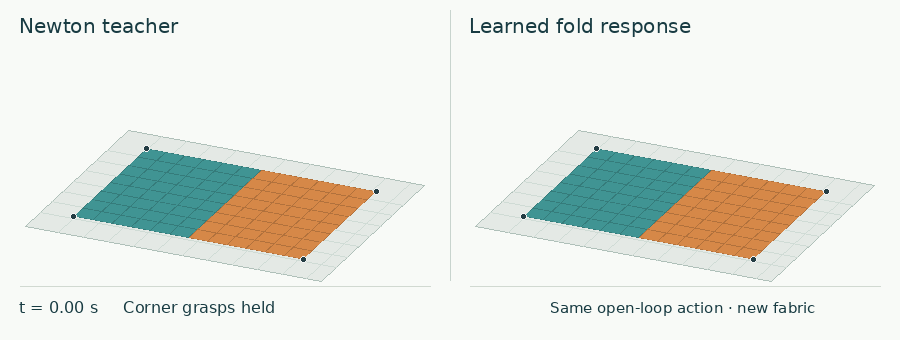
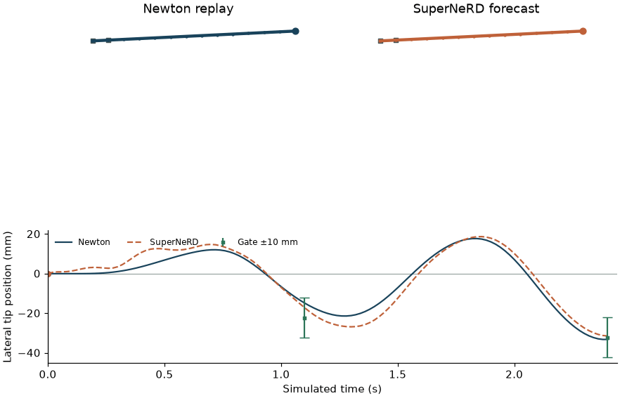
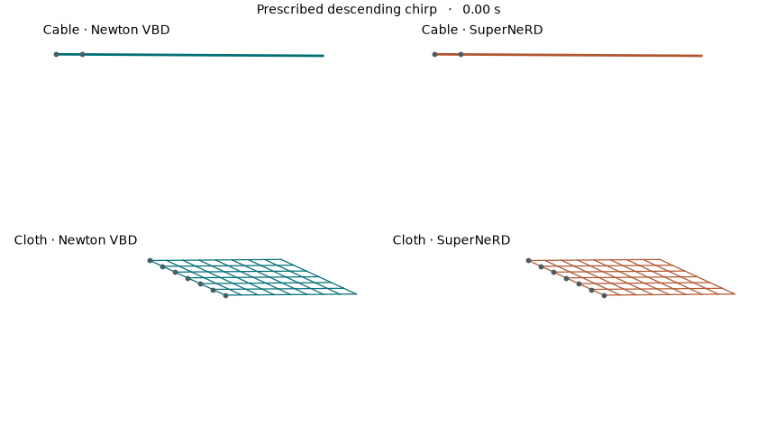
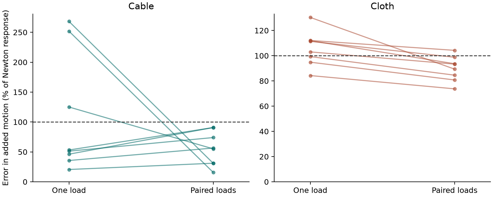
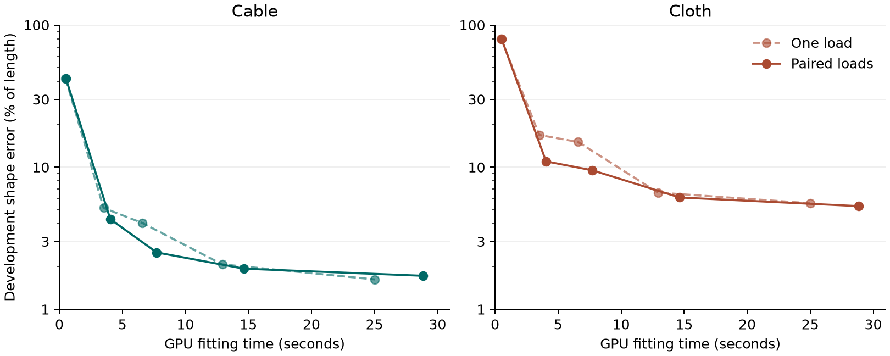
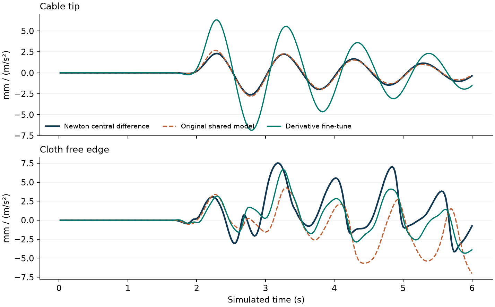
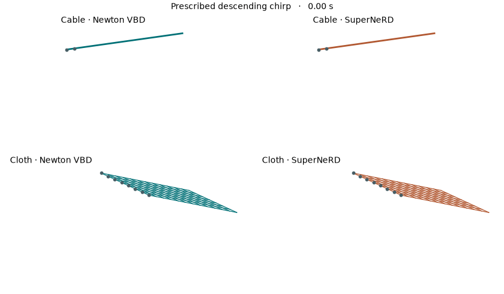

Can the model choose a motion that works?
We give a planner a target and a fixed set of commands. It forecasts each command, selects one, and sends it to Newton. A pass counts only when the executed motion meets the task tolerances. This measures the consequence of choosing the wrong action, even when two predicted shapes look similar.
Fold a cloth and let go


A new cloth expert learns the motion of all 117 vertices from 200 examples. Its inputs describe the fabric and the prescribed corner motion. After every grasp releases, success requires an aligned fold, limited height and low terminal speed. The expert takes 0.24 seconds to fit on one CPU after 32.6 seconds of Newton data generation on ten workers. It has its own weights and a fixed grasp schedule.
| Planner | Newton checks | Successful folds | Planning time |
|---|---|---|---|
| Leave flat | 0 | 0 / 16 | — |
| Geometric fold | 0 | 8 / 16 | — |
| Learned choice | 0 | 9 / 16 | 1.74 ms |
| Geometric + two random programs | 3 | 11 / 16 | — |
| Learned shortlist, Newton selection | 3 | 14 / 16 | 4.00 s |
| All candidates in Newton | 12 | 15 / 16 | 15.62 s |
The learned shortlist and three Newton checks gave 14 successful folds, one fewer than searching all twelve, at 3.91× the planning speed. The model alone predicted intersecting final layers on 11 of 16 selected programs. All 16 hybrid-selected Newton executions finished with correctly ordered sampled layers and zero strict nonadjacent edge–face crossings. A four-fabric refinement check changed two original binary outcomes. The tests use ideal corner grasps and exclude robot grasp acquisition. Folding model and reproduction · Individual outcomes · Timing samples.
When should Newton take over? An optional planner checks the fabric and every proposed grasp program against the coordinate ranges observed during training. Outside those ranges it skips neural prediction and checks the whole bank. On the same 16 fabrics it used the model on 14, executed 66 Newton checks in total, and achieved 14/16 folds. Always using the neural shortlist took 48 checks; full search took 192. This retrospective test measures how much work the fallback sends to Newton. The separate 3.91× timing above covers the original three-check planner. Per-case routing and executed checks · Support-aware planner.
Steer a flexible cable through two timed gates
Eight new clamped cables each receive four goals. The planner chooses two smooth tip loads. To pass, the Newton tip must land within 10 mm of each requested lateral position at 1.10 and 2.40 seconds. The shared SuperNeRD and NeurALL models use their existing weights. This task exercises free-space control under load.



| Planner | Both gates passed | Mean worst gate error | Two-gate readout |
|---|---|---|---|
| No added load | 2 / 32 | 43.8 mm | — |
| SuperNeRD, released | 16 / 32 | 33.8 mm | 0.57 ms |
| SuperNeRD, mixed continuation | 13 / 32 | 35.6 mm | 0.57 ms |
| NeurALL, GRU | 14 / 32 | 14.4 mm | 7.39 ms |
| Newton search | 20 / 32 | 10.0 mm | — |
SuperNeRD can evaluate its damped modes at just the two gate times, which preserves every command decision in this test. NeurALL has lower mean worst-gate error; its recurrent state advances through the intervening times. In a continuous-action follow-up, a three-probe Newton controller reached all 32 targets in 2.12 seconds of planning per goal. With two Newton probes, both a simple controller and its SuperNeRD-assisted counterpart completed 26 of 32 goals. The learned correction gave no extra passes at that budget.
Doubling Newton’s substeps and iteration count shifted the generating command’s worst gate by 61.9 mm on average. None of the 32 generating commands still passed both original gates. This makes the specified Newton configuration part of the cable task. Physical 10 mm accuracy requires a better-qualified teacher. Cable protocol and models · Task outcomes · Readout parity and timings · Continuous control and refinement.
Where sharing helps
SuperNeRD and NeurALL now run on identical cable commands and face the same Newton execution test. A fixed-grasp folding expert adds a different action interface. A future robot task would also need moving grasp frames, contact geometry, and a plug or gripper pose where the task depends on orientation. Sharing task definitions, actions and execution metrics lets specialized models compete while preserving which inputs and physics each one supports. A new model can submit its selected action for every case through one public scorer. Submit and score action choices.
1. Six seconds under a changing force
Each model receives the starting shape, velocity, object properties, and an imposed load. It predicts how the object moves as gravity and the load act on it. Newton supplies training targets and an independent trajectory for scoring. The deployed model advances its own state. No controller, reward or policy optimization enters this experiment.


2. Model and data
Newton’s VBD solver simulates a clamped elastic rod or a cloth patch fixed along one edge. We vary object dimensions, elastic parameters, initial tilt and loading. Each record has 301 frames at 50 Hz, with four physics substeps per frame and eight solver iterations per substep. We prescribe an acceleration on the free tip or edge. Collisions and contact forces between objects are outside this dataset.
The training set contains 192 cables and 192 cloths. In the first experiment each receives one diverse force program. A second experiment adds a pulse to each of the same objects. The model sees the difference between two simulated responses during training. We reserve 16 other objects per material for development. Two evaluation sets each contain eight unseen geometries per material, each with one reference and four related force programs. We designed the paired fit after inspecting the original evaluation. The fresh set uses new geometry seeds and the same held-out triangle and descending-chirp waveform families. It tests new objects within that task.
One model, two materials
A shared encoder converts shape, velocity and material descriptors to 32 damped oscillators and their response to acceleration. Each oscillator retains its phase and amplitude. A causal update applies the current load and a shared neural decoder converts the new state back to positions. Damping keeps the unforced latent oscillators bounded. It imposes no guarantee of energy conservation or collision handling. A batched convolution evaluates the same recurrence during training. An online implementation uses only the current input and carry state.
The cloth representation has five axial samples and three across its width. A cable uses the same layout with identical lateral rows. The decoder fixes known supports and interpolates to the native vertices for evaluation. On the fresh objects, even true sampled positions lose an average of 4.6 mm on cable and 6.1 mm on cloth when interpolated. This limits what this representation can show about wrinkles and tight bends.
3. Shared-model results
Shape error is the Euclidean RMS over native vertices, averaged over future frames and then trajectories, divided by object length. Load-response error uses two rollouts with different forces on the same object. We subtract their positions, compare that difference with Newton’s, and divide by the magnitude of Newton’s added motion. We score after force onset and weight the 32 force pairs per material equally. A score of 100% is obtained by ignoring the change in load. Every six-second rollout starts from a single observed state.
Fresh objects
| Training | Forecast | Cable shape | Cloth shape | Cable response | Cloth response |
|---|---|---|---|---|---|
| One load | Release, 6 s | 1.47% | 4.98% | 106.49% | 105.88% |
| Paired loads | Release, 6 s | 1.57% | 4.28% | 55.58% | 89.78% |
| Paired loads | Moving restart, 4 s | 1.00% | 4.53% | 36.73% | 82.45% |
The paired model averages 12.8 mm of cable error and 28.4 mm of cloth error from release. It improves on ignoring the added force in 32 of 32 cable pairs and 21 of 32 cloth pairs. The 32 pairs share eight geometries per material. The second force history and a loss on the difference were introduced together, so their separate contributions remain unmeasured. The moving restart uses the observed shape and velocity at two seconds and predicts the final four seconds.

Comparison on the original benchmark
| Shared model | GPU fit | Cable shape | Cloth shape | Cable response | Cloth response |
|---|---|---|---|---|---|
| NeurALL published load-diversity model | Earlier fit | 1.58% | 2.76% | 134.44% | 91.82% |
| Streaming attention, short fit | 3.39 s | 8.05% | 10.18% | 315.18% | 136.64% |
| Streaming attention, recursive fit | 47.82 s | 3.77% | 4.09% | 217.48% | 90.59% |
| Damped modes, short fit | 3.26 s | 3.27% | 5.61% | 120.44% | 114.86% |
| Damped modes, long fit | 25.03 s | 1.58% | 3.76% | 83.51% | 110.96% |
| Damped modes, paired loads | 28.86 s | 1.63% | 3.13% | 48.02% | 89.65% |
NeurALL’s archived native predictions have the smallest whole-shape errors in this comparison. The paired model gives the most accurate cable load response. Both use identical Newton labels across all 80 trajectories. NeurALL trained with a different data mixture and initialization. Its timing cannot be inferred from this comparison. The attention and modal fits also use different training recipes, so these results compare working systems. NeurALL audit · NeurALL report.
Where the time goes
On eight CPU workers with warmed Warp kernels, collecting and writing one training trajectory per object took 87.48 seconds. The second program took 81.37 seconds. All 768 raw files were byte-identical to the training records used in the fit. The paired model then took 28.86 seconds for 8,000 updates on one RTX PRO 6000 Blackwell. The sum of those measured phases is 197.71 seconds. Packing, development/test capture, validation, environment setup and initial compilation are separate costs. The attention model used up to 47.82 seconds of optimization. These timings have one fit seed and depend on hardware and cache state. Teacher clocks · Fit curve.
Online simulation speed
We measured 300 consecutive steps for eight fresh objects per material, using one CPU core, one object at a time, and the same descending chirp. The timing includes applying the prescribed input, advancing the state, reconstructing every native vertex and writing each frame to host memory. Newton took 4.390 ms per cable step and 5.421 ms per cloth step. The paired model took 0.0392 ms and 0.0391 ms, giving 112× and 139× speedups on this workload. Both sides use warmed code and exclude initialization, I/O and rendering. The speedups are measured at the approximation errors reported above. GPU and batched scaling require a separate benchmark. Per-object timings.

4. Does backpropagation through force improve the simulator?
SuperNeRD already backpropagates through its predicted trajectories to fit model weights. We tested an additional supervision signal. If the applied force changes by a small amount, can the model predict how every vertex responds? We differentiated the learned trajectory with respect to one force waveform amplitude. The target came from rerunning Newton with slightly stronger and weaker inputs from the same initial state. The pinned Newton VBD implementation has no supported backward path for these cable and cloth steps. No policy enters the experiments. Newton solver capabilities.
Does an explicit derivative help on the original data?
We retrained from scratch on the original 768 trajectories. The control learns the difference in shapes between two different force programs by ordinary backpropagation. The second network learns the exact directional derivative of its own rollout at the midpoint between the two programs. We use this derivative on windows that share their initial states. Both arms see identical training examples and the same random initialization. With 8,000 updates, the control took 28.6 s and reached 1.57% cable and 4.29% cloth shape error on the previously held-out trajectories. The derivative arm took 72.4 s and reached 1.57% and 4.32%. At the same 28-second budget, it completed 3,000 updates and reached 1.82% and 6.29%. An exact derivative of a neural model supplies no additional physical observations. Here the Newton targets were finite differences between existing programs. Matched-time and matched-update comparison.
Generate local force sensitivities
We then made new measurements. Each of 64 training objects receives a nominal force history and one symmetric pair of smooth force perturbations with peak amplitudes of ±0.5 m/s². The 192 training trajectories took 42.8 s to capture and write on eight CPU workers with warm kernels. Eight new cable and eight new cloth geometries supply separate evaluation. Their ±0.25 m/s² runs provide a finer estimate of the local slope. Halving the perturbation changes the full-trajectory Newton slope by 1.9% for cable and 6.4% for cloth. We also test a larger +3 m/s² intervention. These slopes measure one direction per object over six seconds. A complete force Jacobian and a gradient through contact remain outside this experiment.

Starting from the released shared checkpoint, we compared fitting the three observed positions, adding a loss on the predicted difference between the two perturbed trajectories, and explicitly differentiating the neural rollout to fit its slope. Across three minibatch seeds, difference supervision and explicit autodiff both reached 81.9% cable and 75.0% cloth slope error. The former took 3.85 s of GPU optimization and the latter 9.66 s. Position-only fine-tuning reached 166.5% and 98.4%. The original checkpoint scored 65.7% and 84.1%. Local-only fine-tuning improved cloth slope accuracy while degrading cable slope accuracy. Per-seed and per-object scores.
Keep the broad force histories in training
The local-only result motivated a second test. Both continuations see the same original examples for 1,200 updates. The mixed fit also sees the new symmetric perturbations. It uses ordinary backpropagation on position and displacement differences. We fixed the weights before scoring 80 newly generated trajectories on 16 previously unused geometries with triangle and chirp loads. Results are means across both fixed seeds. Each material has 40 shape trajectories and 32 force pairs. Lower is better.
| Continuation | Extra GPU fit | Cable shape | Cloth shape | Cable response | Cloth response |
|---|---|---|---|---|---|
| Original checkpoint | — | 1.41% | 6.37% | 54.56% | 95.04% |
| Original data | 4.1 s | 1.34% | 6.44% | 53.65% | 94.15% |
| Original + perturbations | 7.1 s | 1.28% | 6.03% | 53.94% | 88.59% |
The mixed model improves cloth force response over its parent on seven of eight confirmation geometries. Cable force-response accuracy is close across all three methods. With a moving restart at two seconds, the mixed model’s cloth shape error rises to 7.12% from the parent’s 6.96%, and response error is essentially unchanged at 87.1%. A single default checkpoint would conceal this trade-off. The mixed fit uses more teacher data and time than continuation on the original data. It changes only weights, so the forward architecture and per-step operations are identical. All confirmation and restart results.


Can we update a model in under a second?
We froze the learned oscillator dynamics and fitted the final linear layer to the same 192 trajectories with ridge regression on one CPU thread. Extracting features and fitting the position readout took 0.48 s. Adding derivatives of the features took the total to 0.65 s. On the 16 local probe objects, adding the derivative changed the cable response error from 62.49% to 62.13% and cloth from 89.80% to 89.06%. Its whole-shape errors were 1.62% and 3.46%. On the earlier chirp/triangle bank, the cable response error increased from the original checkpoint’s 55.59% to 69.56%. This is fast adaptation of an existing feature representation, including a modest gain on the targeted loads and a measurable loss of transfer. Parent training, data generation, warm-up and data loading are separate expenses. CPU fit and errors · Transfer test.
Robot control derivatives
For CartPole we differentiated the learned four-component next state with respect to applied force. We compared a residual MLP trained on the two extra perturbed Newton states to one trained on their central difference as a derivative target. Three matched seeds reduced one-step force-derivative errors from 21.3–21.8% to 19.6–20.6%, depending on the state component. Average forced 100-step angle RMSE changed from 73.71° to 72.98°, while passive error rose from 53.88° to 54.20°. CPU fitting took 1.25 s versus 2.18 s. Our separately calibrated six-parameter CartPole equations, which include the mass matrix and known integration scheme, scored 0.00042° on the same forced tests. This highlights how much a suitable dynamics representation matters on this robot. Robot experiment.
Sobolev training and derivative-informed neural operators have improved data efficiency on other tasks. DEFORM uses a differentiable elastic-rod model with learning for real cable dynamics. Our measurements support perturbation data and short weight updates for release rollouts. They give no evidence of a universal training-speed gain from adding a higher-order loss. Sobolev Training · Derivative-Informed Neural Operators · DEFORM · Reproduction and checkpoints.
5. How fast can we learn one known object?
This narrower experiment gives each object a stored nominal Newton trajectory and twelve additional calibration loads. From the same release state, a small causal model maps load history and elapsed time to a correction to that nominal trajectory. Each object has separate parameters. Four cables and four cloths are each tested on eight new 1.6-second programs. Test programs include reversals, chirps, late pulses and rotating loads. The horizon and length normalization differ from the six-second experiment.
| Gaussian radial basis model | Capture per asset | Fit per asset | Native error | Error / initial span | Beat nominal |
|---|---|---|---|---|---|
| Cable | 5.94 s | 11.7 ms | 6.35 mm | 0.79% | 31 / 32 |
| Cloth | 6.31 s | 21.8 ms | 12.08 mm | 1.37% | 28 / 32 |
A phase-dependent linear filter was even better for these cables (5.04 mm, 0.64% of initial span). For cloth the same linear method reached 22.42 mm, while ignoring the added force gave 17.72 mm. The radial basis model lowered this to 12.08 mm. The sub-1% cable result applies to known assets, a stored nominal trajectory and a fixed release. Calibration data, baselines and verifier.
6. What carries over from FlashNeRD?
FlashNeRD learns robot forward dynamics from state history and an action. The authors also use that model for planning and reinforcement learning. Their maximum 55× speedup measures model inference against optimized NeRD at very large batch size. Their 34-second ANYmal result times downstream policy learning after fitting the simulator. Neither measurement gives a time to learn cable or cloth physics. Ataei et al., FlashNeRD.
| FlashNeRD advance | SuperNeRD implementation and evidence |
|---|---|
| Parallel temporal attention and feedforward paths, cached history | The streaming experiment uses two blocks with multi-query attention and a gated feedforward path. The fixed cache gives a five-frame receptive field. Against full-window recomputation with identical weights, the cache speeds up a batched step by 1.32× at batch 1, 1.31× at 80 and 1.15× at 512. |
| Optimized execution | We test PyTorch CUDA graph replay. FlashNeRD’s specialized fused kernels are absent from this implementation. Our timing measures a complete model step on the compact point grid with warm buffers. |
| Contacts at variable locations and analytical two-way coupling | The paper encodes detected contacts and demonstrates interaction with externally simulated rigid objects. Our deformable datasets use prescribed loading in free space. Contact encoding, reaction forces and two-way coupling remain untested. |
The archived CartPole policy experiment used a small state network. The new streaming experiment implements and measures a subset of FlashNeRD’s architecture. Our best force-response model in these tests uses damped modes. A comparison of time to a common quality threshold with an official deformable NeRD model would require the same data, task and hardware. Cache timings · Archived CartPole study.
7. Limits and public benchmarks
The whole-shape metric is dominated by motion under gravity. A visually similar rollout can miss the small displacement driven by a change of load, especially for cloth. Native-node coverage and paired-force scoring expose that failure. The present fit does not establish accuracy on contact, moving supports, fine folding, unknown loads, granular materials or arbitrary restart states. The moving test restarts from one known phase of each trajectory. Replication across more initializations and objects is needed to estimate variability.
We could not verify a public paper specifically named CableNeRD or ClothNeRD in the November 2026 literature search. Two public comparisons can be reproduced independently. Giuili et al. evaluate cable prediction and include contact, with a comparison of attention biases based on distance along the cable and distance through space. Pfaff et al. publish the MeshGraphNets cloth benchmark and FlagSimple implementation. We have not scored SuperNeRD on either authors’ test set. A matched, contact-rich comparison and a finer cloth representation are the next experiments with a direct bearing on the observed failures. Cable paper · DLOGPS code · MeshGraphNets paper · Cloth code and data instructions.
8. Reproduce the experiments
The release contains the shared and per-asset checkpoints, compact training and held-out data, Newton teacher generator, a native-vertex scorer, and per-case metrics. The teacher uses Newton revision 0ced8f8420 and Warp 1.19.0.dev20261020. The measured learning environment used Python 3.12.14, NumPy 2.5.3 and PyTorch 2.15.0+cu132. Shared model recipe · Streaming model recipe · Fresh results · Data provenance.